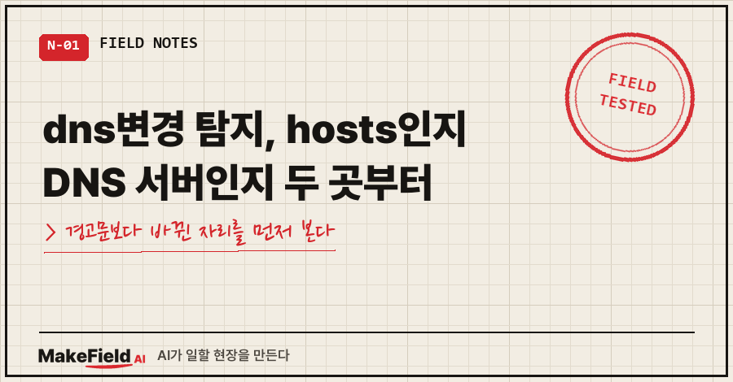
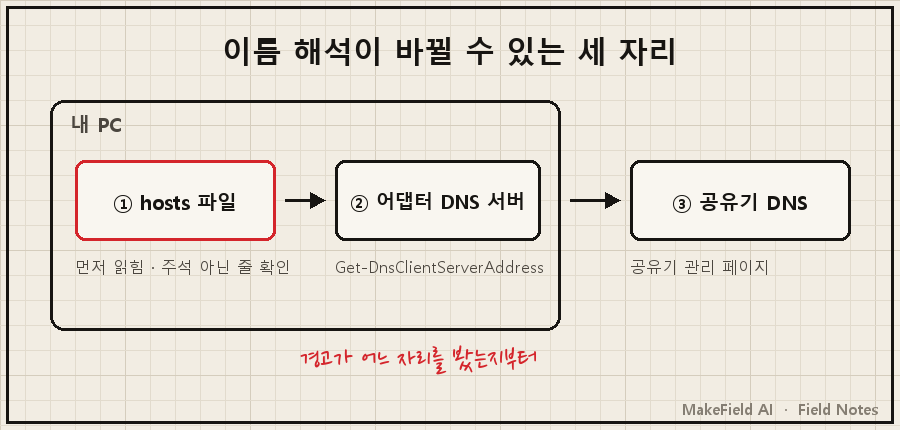
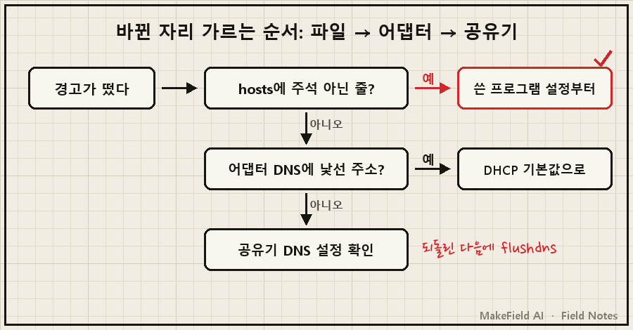
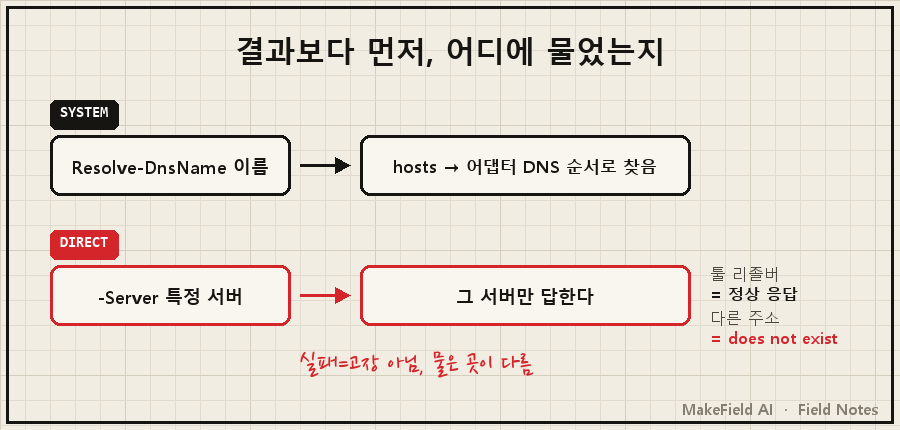

dns변경 탐지 경고가 뜨면, 먼저 내 PC 안에서 이름 해석이 바뀔 수 있는 두 자리, hosts 파일과 네트워크 어댑터의 DNS 서버 주소 중 어디가 바뀌었는지부터 갈라야 해요.
어디가 바뀌었는지 알면 "누가 바꿨는지"가 보이고, 고치는 법은 거기서 정해집니다.
핵심만 한 줄로: 윈도우에서 hosts 파일은 Get-Content로, 어댑터별 DNS 서버 주소는 Get-DnsClientServerAddress로 각각 확인할 수 있고, 둘 중 바뀐 쪽을 쓴 프로그램 설정을 먼저 되돌리는 게 순서입니다(→ https://learn.microsoft.com/en-us/powershell/module/dnsclient/get-dnsclientserveraddress).
설비 자동화 일을 15년쯤 하다 보니, 경보가 울리면 "어느 센서가 무엇을 봤나"부터 따지는 버릇이 있어요. 2026년 9월, 윈도우 10 노트북에서 비슷한 경고를 만났을 때도 그 순서로 AI랑 같이 짚었습니다.
1. 'DNS가 바뀌었다'는 말이 가리킬 수 있는 자리
DNS는 주소 이름을 IP로 바꿔주는 장치예요. 그 변환 결과를 바꿀 수 있는 자리가 내 PC 안에 두 곳, 밖에 한 곳 있습니다.
| 자리 | 어디 있나 | 확인 방법 | 바뀌는 경로 |
|---|---|---|---|
| hosts 파일 | C:\Windows\System32\drivers\etc\hosts | 주석 아닌 줄 보기 | 프로그램이 파일에 직접 기입 (제 경우 VPN 툴) |
| 어댑터 DNS 서버 | 네트워크 어댑터 설정 | Get-DnsClientServerAddress | 수동 지정 시 공유기가 주는(DHCP) 값을 덮어씀 |
| 공유기 DNS | 공유기 관리 페이지 | 관리 페이지 DNS 항목 | 공유기 설정 변경 |

두 번째 줄은 마이크로소프트 공식 문서에 그대로 적혀 있어요. DNS 서버를 손으로 지정하면 그 어댑터의 DHCP 설정을 덮어쓴다고요(→ https://learn.microsoft.com/en-us/powershell/module/dnsclient/set-dnsclientserveraddress). 세 번째는 한 백신 제조사 공식 도움말이 "라우터가 사용하는 DNS 서버가 악성"인 경우로 따로 경고하는 자리입니다.
2. 제 화면에 뜬 건 hosts 쪽이었어요
제 노트북은 재부팅할 때마다 금융 보안 프로그램이 "hosts 파일 변경이 탐지되었다, 복원할까요?"라고 물었어요. 범인은 며칠 전 제가 깐 원격접속용 VPN 툴이었고, 악성코드가 아니라고 판정한 과정은 이전 글에 정리해 뒀습니다(→ https://blog.naver.com/makefield_ai/224410743445).
이 글에서 짚고 싶은 건 그다음이에요. 고친 설정의 이름에 DNS가 들어 있었거든요.
(vpn-cli) set --accept-dns=false이 툴의 "DNS 설정 받기" 옵션이 켜져 있으면, 툴이 기기 이름을 hosts에 적어 넣었어요. 이름은 DNS 옵션인데 보안 프로그램 눈에 걸린 자리는 hosts였던 거죠. 옵션을 끄자 hosts 구역이 통째로 사라졌고, 실측해 보니 바뀐 설정 항목은 DNS 수용 여부 하나뿐이었습니다.
그래서 DNS 변경 탐지류 경고를 보면 저는 문구보다 자리를 먼저 봐요. "DNS"라는 단어가 hosts를 가리킬 수도, 어댑터 설정을 가리킬 수도 있으니까요.
3. 어디가 바뀌었는지 가르는 순서
관리자 권한 PowerShell에서 위에서부터 차례로 하면 됩니다.
① hosts에 살아 있는 줄이 있는지
Get-Content C:\Windows\System32\drivers\etc\hosts | Select-String -NotMatch '^\s*(#|$)'아무것도 안 나오면 hosts는 기본 상태예요. 줄이 나오면 그 이름을 보세요. 내가 깐 프로그램 이름의 구역이면 그 프로그램 설정을, 처음 보는 도메인과 IP면 감염 쪽을 먼저 의심합니다.
② 어댑터마다 DNS 서버가 뭘로 잡혀 있는지
Get-DnsClientServerAddress -AddressFamily IPv4
ipconfig /all내가 넣은 적 없는 주소가 있는지, 처음 보는 가상 어댑터가 끼어 있는지 봅니다. ipconfig /all은 모든 어댑터의 전체 TCP/IP 구성을 보여줘요.
③ hosts를 빼고 DNS만으로 물어보기
Resolve-DnsName naver.com
Resolve-DnsName naver.com -NoHostsFile-NoHostsFile은 hosts를 건너뛰고 묻는 옵션이에요(→ https://learn.microsoft.com/en-us/powershell/module/dnsclient/resolve-dnsname). 두 결과가 다르면 hosts가 끼어든 거고, 같은데도 이상하면 DNS 서버 쪽을 봐야 합니다.

④ 되돌리기는 쓴 쪽부터
저는 hosts 파일을 직접 고치지 않았어요. 쓴 프로그램 옵션을 끄자 툴이 자기 구역을 스스로 걷어냈습니다. 보안 프로그램을 지우거나 예외로 등록하는 길도 있었지만 안 골랐어요. 그러면 팝업은 사라져도 진짜 변조까지 같이 통과하거든요. 어댑터 DNS가 손으로 지정돼 있었다면, 공식 문서 기준으로 이 명령이 DHCP 기본값으로 되돌립니다(12는 공식 문서의 예시 번호, 내 어댑터 번호는 ②의 결과에서 확인).
Set-DnsClientServerAddress -InterfaceIndex 12 -ResetServerAddresses
ipconfig /flushdns공유기 쪽이 의심되면 관리 페이지에 들어가 DNS 설정이 익숙하지 않은 IP를 가리키는지 보라는 게 앞서 말한 백신 제조사 도움말의 안내예요.
4. 확인할 때 '정상인 실패'에 속지 마세요
설정을 바꾼 뒤 AI랑 확인하다가 기록에 박아둔 장면이 있어요. 툴 전용 리졸버에 -Server로 직접 물으면 다른 기기 이름이 정상으로 풀렸습니다. 리졸버는 살아 있고, 시스템 DNS 경로에 등록된 것만 빠진 상태였던 거예요.
Resolve-DnsName (다른 기기 이름) -Server (툴 리졸버) → IP 정상 응답
Resolve-DnsName (다른 기기 이름) -Server (다른 주소) → DNS name does not exist ← 정상두 번째 줄은 장애가 아니었어요. 그 주소는 애초에 밖에서 직접 묻는 서버가 아니었거든요. 기록에 "이 실패를 장애 신호로 오독하지 말 것"이라고 따로 적어 뒀습니다. 어느 서버에 물었는지 모르고 실패만 보면 멀쩡한 걸 고치게 돼요.

종결은 숫자로 봤어요.
hosts 마지막 수정 : 18:13 ← 재부팅(19:03) 이전
hosts 유효 라인 : 0줄 (주석 제외)
보안 프로그램 : 19:04 기동 = 감시는 살아 있음
팝업 : 재부팅 2회 모두 안 뜸보안 프로그램 로그는 암호화돼 있어 읽을 수 없었고, 팝업이 떴는지는 제 눈이 유일한 증거였어요. 감시가 살아 있는데 조용하다는 것까지 봐야 끝입니다.
5. 같은 증상, 다른 경우
- 경고가 hosts 파일을 콕 집어 말한다 → 팝업이 악성코드인지 오탐인지 가른 과정은 이전 글에 있어요(→ https://blog.naver.com/makefield_ai/224410743445)
- hosts를 원래대로 돌리는 방법이 궁금하다 → 백업·기본값 초기화까지 네 가지 방법을 정리했어요(→ https://blog.naver.com/makefield_ai/224442025364)
- hosts 파일이 어디 있는지, 메모장에서 왜 안 보이는지 → 위치와 여는 법은 따로 있습니다(→ https://blog.naver.com/makefield_ai/224433332191)
이런 질문이 나올 것 같아서
Q. DNS 변경 탐지 경고가 뜨면 이미 감염된 건가요?
그렇다고 단정할 근거는 경고 하나로는 부족해요. 제 경우엔 제가 깐 VPN 툴의 정상 동작이었습니다. ①의 명령으로 살아 있는 줄을 보고, ②로 어댑터 DNS를 본 다음 판단하는 게 순서예요.
Q. ipconfig /flushdns만 하면 해결되나요?
아니요. 공식 문서 기준으로 이 명령은 DNS 캐시를 비울 뿐이에요. hosts에 적힌 줄이나 손으로 지정한 DNS 서버는 그대로 남습니다. 바뀐 자리를 되돌린 다음에 캐시를 비우는 용도입니다.
Q. VPN 툴의 DNS 옵션을 끄면 원격접속이 끊기나요?
제 경우엔 안 끊겼어요. 재부팅 두 번 뒤 새로 맺힌 원격 연결까지 확인했습니다. 이름을 IP로 바꾸는 일은 접속하는 쪽 기기에서 일어나서예요. 대신 이 PC에서 다른 기기를 이름으로 부르는 건 시스템 DNS 경로로는 안 될 수 있어요.
여러분 화면의 경고문에는 hosts와 DNS 중 어느 단어가 적혀 있었나요? 그 단어가 첫 번째 단서예요.
경보 하나를 끝까지 따라간 기록들, makefield.ai에서 이어서 보실 수 있어요.
출처
- Microsoft Learn, Get-DnsClientServerAddress (인터페이스별 DNS 서버 IP 주소 조회) → https://learn.microsoft.com/en-us/powershell/module/dnsclient/get-dnsclientserveraddress
- Microsoft Learn, Set-DnsClientServerAddress (수동 지정 DNS는 DHCP 설정을 덮어씀, -ResetServerAddresses로 DHCP 기본값 복귀) → https://learn.microsoft.com/en-us/powershell/module/dnsclient/set-dnsclientserveraddress
- Microsoft Learn, Resolve-DnsName (-NoHostsFile: hosts 건너뜀, -Server: 지정 서버에 질의, 미지정 시 인터페이스 DNS 서버) → https://learn.microsoft.com/en-us/powershell/module/dnsclient/resolve-dnsname
- Microsoft Learn, ipconfig (/all 전체 구성, /displaydns에 hosts 항목 포함, /flushdns 캐시 비우기) → https://learn.microsoft.com/en-us/windows-server/administration/windows-commands/ipconfig
- ESET 도움말, 홈 네트워크 알림 (라우터 DNS 서버가 악성일 수 있음, 관리자 페이지에서 DNS 설정 확인) → https://help.eset.com/essp/19/ko-KR/idh_page_homenetwork_notifications.html
- 증상·실측값: 2026-09-13 개인 노트북 점검 기록(제품명·기기명·IP 제외)
태그: #dns변경탐지 #DNS변경 #DNS변경경고 #DNS서버확인 #DNS설정확인 #DNS원래대로 #hosts파일변경탐지 #GetDnsClientServerAddress #ResolveDnsName #ipconfigall #ipconfigflushdns #공유기DNS #파밍경고 #PC보안점검 #MakeFieldAI